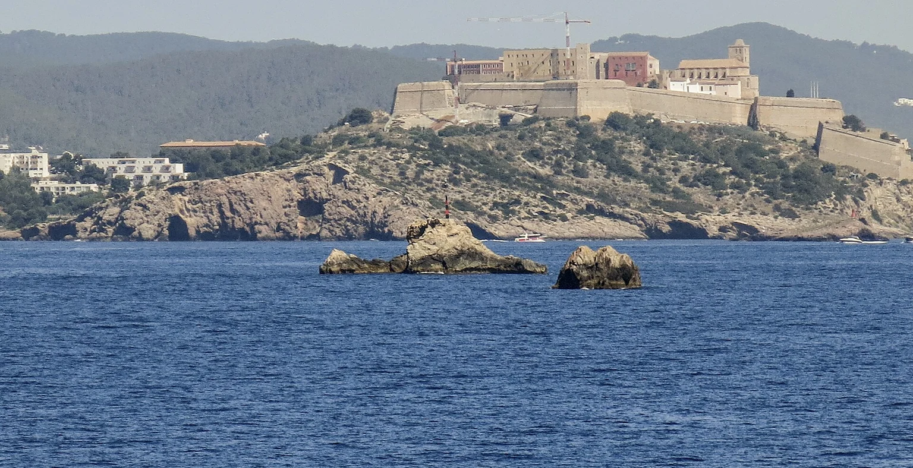

Balearic Islands, Spain
A music-led evening, a quiet bay and enough time for both—without confusing the island’s different settings.
Balearic Islands, Spain
A music-led evening, a quiet bay and enough time for both—without confusing the island’s different settings.
Your preferences. Thoughtful options. Personal attention throughout.

Balearic Islands, Spain
A music-led evening, a quiet bay and enough time for both—without confusing the island’s different settings.
A few considered examples. Your personal selection extends beyond these pages, with stays and privileges chosen around your preferences.
Xarraca Bay, northern Ibiza, Balearic Islands, Spain
A northern-bay stay for guests whose days matter as much as an occasional music-led night.
Who it suits
Northern-bay resort & residences
Let the morning belong to Xarraca Bay, with lunch and time outdoors setting an easy rhythm. An evening elsewhere on the island can follow on a chosen night, with the driver and the return planned before leaving. The next day need not begin early. A residence or mansion may suit friends who want a shared base, while a suite can make more sense for two. Choose the northern setting consciously: it creates the quiet contrast, but also a deliberate journey to the southern clubs.
Getting there & getting around
Road arrival to northern Ibiza; allow for the return from southern or central venues.
Before choosing
Confirm the seasonal calendar, exact accommodation and club-transfer timing. No 2027 residency is assumed.
A different choice
Nobu Hotel Ibiza Bay places Talamanca and the Ibiza Town side of the island closer.
Details checked · 26 Oct 2026
52 Carrer de Ses Feixes, Talamanca Bay, Ibiza, Spain
A Talamanca beach base for guests who want the town-and-marina side of Ibiza within their daily plans.
Who it suits
Talamanca beach hotel
Walk beside Talamanca before deciding whether lunch should stay at the hotel or take you towards the marina. A pool afternoon leaves time to prepare for a chosen music evening, with the actual event and the return transfer already arranged. Another day could belong to Ibiza Town rather than another late night. This is a coastal base on the more urban side of the island, so choose it for that balance. A quieter northern bay would suggest a different kind of holiday.
Getting there & getting around
Road arrival to Talamanca; plan the route to the selected club separately.
Before choosing
The current hotel site lists operation until 26 October 2026. Confirm the next seasonal opening rather than carrying that date into 2027.
A different choice
Six Senses Ibiza offers a northern-bay setting with residences for a different pace.
Details checked · 26 Oct 2026
| Property / setting | Style / suggested fit | Main reason to choose it | Accommodation | Facilities | Access / transport | Season / practical considerations |
|---|---|---|---|---|---|---|
| Six Senses Ibiza Xarraca Bay, northern Ibiza, Balearic Islands, Spain | Northern-bay resort & residences | A northern-bay stay for guests whose days matter as much as an occasional music-led night. | Rooms and cave suites sit alongside residences and larger mansions. | Different accommodation categories have different bay views and outdoor spaces. | Road arrival to northern Ibiza; allow for the return from southern or central venues. | Confirm the seasonal calendar, exact accommodation and club-transfer timing. No 2027 residency is assumed. |
| Nobu Hotel Ibiza Bay 52 Carrer de Ses Feixes, Talamanca Bay, Ibiza, Spain | Talamanca beach hotel | A Talamanca beach base for guests who want the town-and-marina side of Ibiza within their daily plans. | Rooms and suites; the layout and outlook are confirmed for the chosen category. | Beach and pool-deck dining give the day a different rhythm from a northern rural stay. | Road arrival to Talamanca; plan the route to the selected club separately. | The current hotel site lists operation until 26 October 2026. Confirm the next seasonal opening rather than carrying that date into 2027. |
Browse Hotels & Private Stays ↗ · Private villas & group stays ↗
A selection to inspire your next evening. In every destination, we shape a shortlist around you, with further tables, experiences and privileges shared personally with our clients. Tell us your taste; your time is ours to look after.
Tell us the cuisine and atmosphere you enjoy. We can develop a dining shortlist around your chosen base and dates.
Explore by cuisine & occasion ↗
One reservation or every evening of your stay. A wider world of possibilities, shared personally and arranged around you.
A club evening in the south of the island, with a different journey from a northern-bay hotel.
Season Seasonal programme; 2027 dates to be announced
Published events are 18+. Ticket or table request once the actual date and programme are released.
Discuss this experience ↗A large-scale music evening between Ibiza Town and San Antonio; the surrounding stay can remain as quiet as you prefer.
Season Seasonal programme; 2027 dates to be announced
Published events are 18+. Confirm the announced event, ticket or table format, and return transfer.
Discuss this experience ↗Tell us when you will be here. We will share occasions and experiences to shape your time around.
Browse Events & Experiences ↗Choose a base around the days as well as the nights. A quieter northern stay changes the journey to a club; a southern address keeps a different part of the island close.
Pick the actual event first, then allow an unhurried lunch and a day by the sea around it. A previous summer’s residency is inspiration, not a confirmed programme for 2027.
Our attention continues beyond the reservation. Contact us 24/7 during your stay, including for a change of plan or a spontaneous idea. We explore suitable options and confirm the arrangements you choose.
Share the occasion or atmosphere that appeals. We can explore the stay around it.
Begin an EnquiryContact us 24/7. Our team will respond personally; email info@zelrocprive.com whenever it suits you.
A little inspiration—or something already in mind?